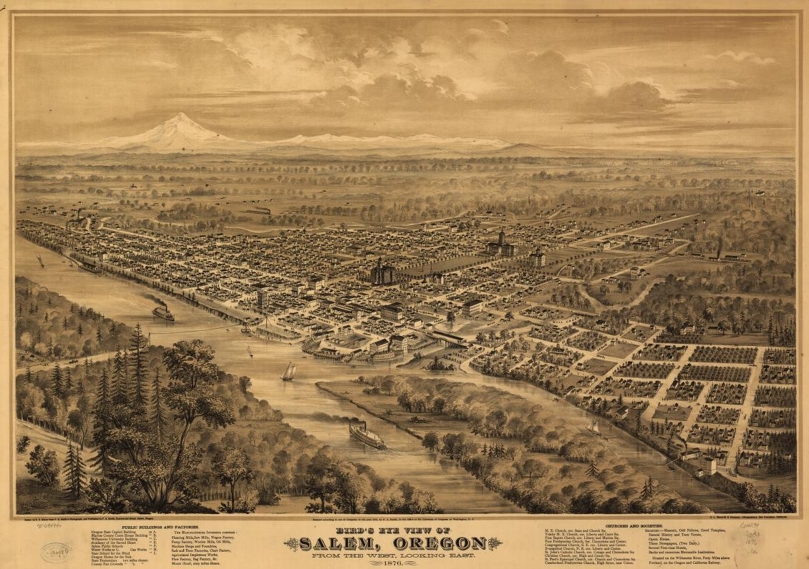

Salem, Oregon
The Cherry City
| City | Founded |
Region

|
Population | Urbanicity | Affluence |
|---|---|---|---|---|---|
| Salem | 1842 | Willamette Valley | 177,432 | Urban | Average |
Did you know?

- In 1850, the city planner William Willson decided on the name "Salem", after the Biblical Hebrew word "Shalom", meaning "peace". 3
- Despite being the state capital, Salem has less than a third the population of Portland. 2
- The capitol building burned down only two months after its construction in 1855 and took until 1876 to be rebuilt. The replacement also burnt down in 1935, and was reconstructed in 1938 where it still stands. 3
- The Oregon State Fair has been held in Salem almost every year since 1862. 4
- The nickname "Cherry City" comes from the importance of the cherry-growing industry. During the Oregon State Fair, a cherry queen would be eleceted for the year. 3